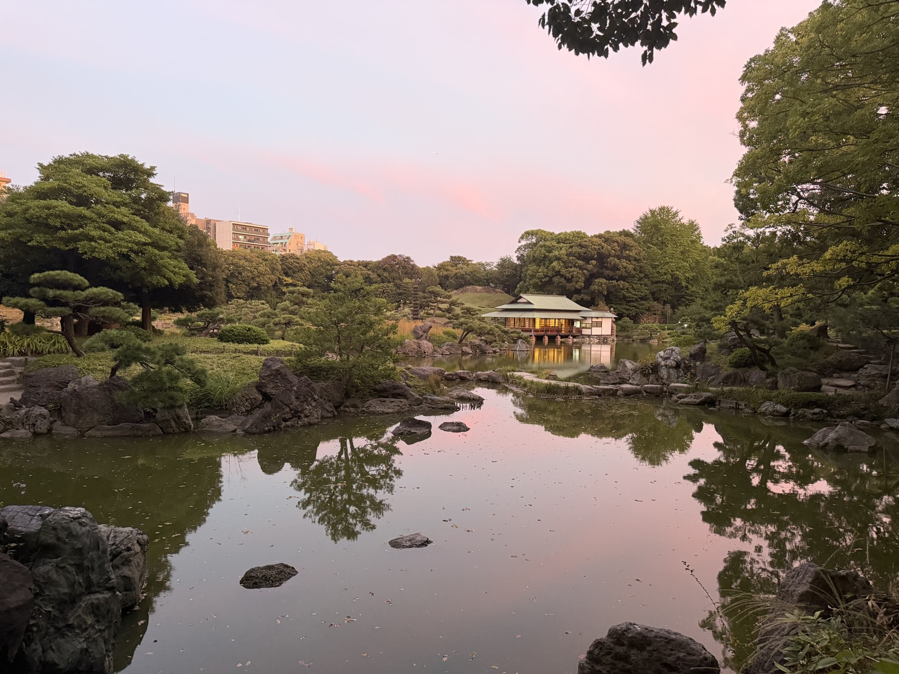
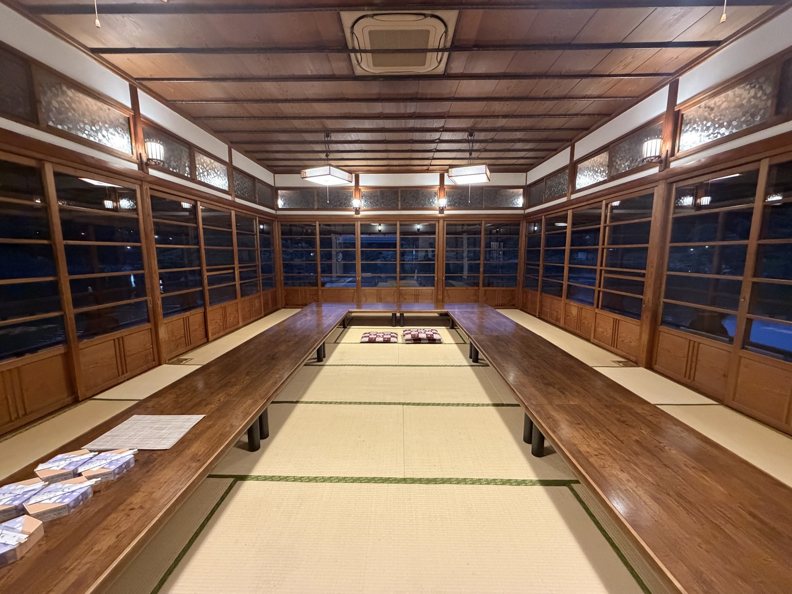

日本酒の会
Kiyosumi Garden / Ryotei
清澄庭園 涼亭





Place
晴れの場を、借りる
会場は、清澄庭園の中に建つ「涼亭」です。1909年（明治42年）、岩崎家が、国賓として来日した英国のキッチナー元帥を迎えるために建てました。2005年には「東京都選定歴史的建造物」に指定されています。
隅田川にほど近い庭園の、池のほとり。月明かりと水音のなかで酒を酌み交わす時間は、同じ一本でも、味わいまで少し変えてしまいます。
遠くへ行かなくても、高級な店でなくても、晴れの場は借りられます。歴史ある空間は、調べてみると個人でも十分に使える、意外と身近な存在です。
About
推しを持ち寄ると、文化が育つ
参加条件は一つだけ。今、自分が好きな日本酒を一本持ってくること。高価な酒である必要も、有名な酒である必要もありません。誰かに飲んでほしい一本を持ち寄ります。
全員でテイスティングして、その日のチャンピオンを選びます。そして飲んだ酒は、日本酒図鑑に記録していきます。酒は消えても、味の記憶と、人とのつながりは残ります。
News
開催のお知らせ
次回開催のお知らせは、準備が整いしだい掲載します。これまでの開催の様子は、開催レポートからご覧いただけます。